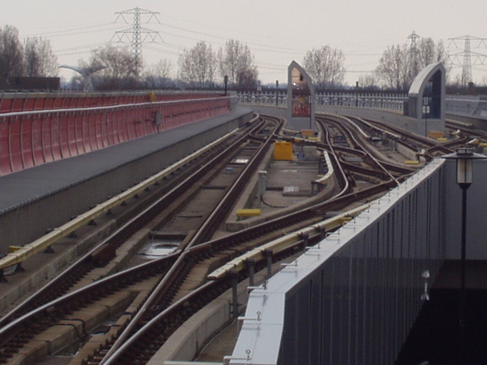

Poortjes nu ook voor de reiziger zichtbaar en ander nieuws...
- woensdag 10 december 2008 21:42
- Geschreven door Joachim
Sinds dinsdag 8 juni zijn de voorbereidingen van de poortjes ook voor publiek zichtbaar. In de hal van station Oostplein zal de oplettende reiziger kleine kunststof dopjes in de vloer zien. Er zijn namenlijk gaten geboord om begin volgende maand de tourniquettes te kunnen plaatsen. Om te voorkomen dat deze gaten volgende maand vol met rotzooi zitten heeft de aannemer (Vialis) dopjes op de gaten gedaan.
Het boren van deze gaten is een tijdrovend klusje, de natuurstenen vloeren zijn erg hard, en het beton er onder is van zeer goede kwaliteit waardoor het boren veel tijd kost. Daarom is Vialis nu al begonnen met dit boorwerk. Ook op station Beurs is deze week begonnen met dit boorwerk. In de loop van de maanden zal er op ieder station geboord gaan worden. Ook de bekabeling is al voor een groot gedeelte gereed, maar dit ligt vaak op plaatsen die voor publiek niet zichtbaar zijn. In november moet het systeem gereed voor gebruik zijn.
Camerabewaking Akkers opstelsporen
Op de opstelsectie/keersectie ten zuiden van station de Akkers is sinds 3 juni camerabewaking in gebruik. Eerder werd dit ook al toegepast op de keersporen van Schiedam Centrum. Het doel van de bewaking is het tegengaan van vandalisme, dan wel graffiti spuiten op de metrostellen die daar 's nachts opgesteld staan. Er zijn 17 camera's geinstalleerd. Vanaf de Centrale Verkeersleiding kan men de opstelsporen in de gaten houden en zo nodig er iemand op af sturen.

Keersporen Akkers: nu ook met camerabewaking...
Bram Ladage
In de hal van station Dijkzigt is inmiddels een nieuwe Bram Ladage geopend. De accomodatie op dit station is er net zo een als op de Kralingse Zoom, maar dan wat groter. Hier niet alleen de gewone patatzaak, maar ook de SapExpress en de BoterhamExpress. Maak je reis tot een hoogtepunt en ga een keer langs op station Dijkzigt, maar niet eten en drinken in de voertuigen: dát is niet toegestaan. De komende dagen wordt de omgeving rond de zaak nog afgewerkt.
Heg sneltram gesnoeid
Op diverse plaatsen langs het sneltramtracé tussen Capelsbrug, Binnenhof en de Tochten v.v. wordt zoals gebruikelijk de heg weer gesnoeid. Onder toeziend oog van een RET-veiligheidsman zou het snoeien zonder incidenten kunnen verlopen.
Afgelopen week ter hoogte van de Pres. Rooseveltweg niet. Een van de snoeiers droeg voor het geluid van de snoeimachine gehoorbescherming. De persoon liep precies in het profiel van vrije ruimte toen er op spoor 1 een metrosneltram naderde. De veiligheidsman verderop probeerde de snoeier nog te attenderen op de naderende metrosneltram, maar de snoeier hoorde niets en was in gedachten verzonken, onder andere vanwege de gehoorbescherming en liep gewoon verder. De metrosneltram moest een noodremming maken om een aanrijding te voorkomen.
Werkzaamheden Oosterflank
Op station Oosterflank is er deze week een begin gemaakt aan de werkzaamheden aan het dak van het station. Wat de werkzaamheden precies inhouden is niet bekend. Reizigers moeten tot nader order even rekening houden met overlast van de werkzaamheden, al wordt dit zoveel mogelijk voorkomen. Binnenkort foto's.
Bombardier voert retrofit uit aan series 5300 en 5400
Bombardier Brugge voert de komende weken een retrofit uit aan de remwerken van de series 5300 en 5400. Dit gebeurt op remise Waalhaven. Elke dag zal er een van de 18 5400-stellen van remise 's-Gravenweg naar remise Waalhaven rijden om daar de retrofit te ondergaan. De retrofit wordt aan de Waalhaven uitgevoerd, omdat daar het gereedschap en bevoorrading van Bombardier aanwezig is.